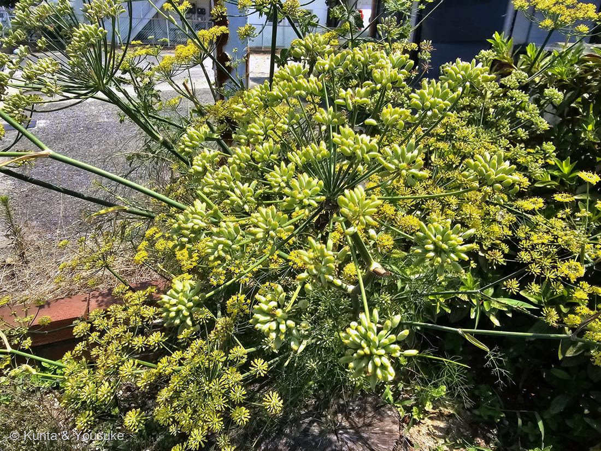

フェンネル（ウイキョウ／茴香）
Foeniculum vulgare Mill.
別名 · ウイキョウ／ヒンディー語 सौंफ（サウンフ）＝インド料理店の、あの口直しの粒
セリ科 · Apiaceae（ウイキョウ属）
燻太さんの見立て「カレーに使うのかな」「お花の形はおっきなセリだね」……2つとも、当たり。
見立て① 「カレーに使うのかな」── たぶん、大正解
- カレー屋さんの玄関先にフェンネル——これは理にかなっている。
- フェンネルシードは、インド料理の基本スパイス。ベンガルの5種混合スパイス「パンチフォロン」の一つ（フェンネル／クミン／マスタード／フェヌグリーク／ニゲラ）。
⭐そのニゲラが、うちの図鑑の No.014 ニゲラ の仲間。ただし香辛料に使うのは Nigella sativa（ブラッククミン）で、014は観賞用の N. damascena。別種だけれど、同じ属。 - インド料理店の出口に置いてある、色とりどりの粒。あれがフェンネルシード（ヒンディー語で サウンフ）。食後の口直しと消化のために噛む。
- → あのお店の玄関にこの株が立っている理由は、たぶんこれ。看板であり、材料であり、あいさつ。
- 実は甘くアニスのような香り。主成分は アネトール——八角（スターアニス）やアニスと同じ香り成分。科がぜんぶ違うのに、同じ分子にたどりついている。
見立て② 「お花の形はおっきなセリ」── 正確
- 複散形花序（compound umbel）。太い柄が放射状にひらいて、その先でもう一度小さく放射状にひらく。傘の骨が二段になった形——セリ科（Apiaceae）の看板。
- セリ科＝No.011 ミツバと同じ科。図鑑で2種目のセリ科。ミツバは小さく、この子は2mを超える。でも、花のつくりは同じ。
- 燻太さんの「おっきなセリ」は、分類学的にそのとおりだった。
写真に写っているのは「スパイスができかけ」の瞬間
学名と和名の由来
- Foeniculum（フォエニクルム）＝ラテン語 foenum（干し草）の指小形＝「小さな干し草」。乾いた葉の香りから。
- vulgare（ウルガレ）＝「ふつうの」。
- 和名 茴香（ういきょう）＝漢方の名。「回（もどす）＋香」＝失われた香りを呼びもどす、という意味だとされる。
この植物のこと ── そして、大事な注意
- 地中海原産の多年草。日本には平安時代に薬用として渡来。よく育つと2mを超える。
- 品種は大きく2つ：スイートフェンネル（葉と種を使う／この写真の子はこちら）と、フローレンスフェンネル（株元がタマネギのように肥大する野菜）。
- ⚠セリ科は「食べられる子」と「猛毒の子」が瓜二つ。ドクニンジン（Conium maculatum——ソクラテスを死なせた毒）やドクゼリは、フェンネルやパセリにそっくり。セリ科の野草は、名前が確定するまで絶対に口に入れない。
→ No.013 なぞの野草でトリカブトに注意したのと、まったく同じ話。 - ⚠フェンネルは他の植物の生育を抑える（アレロパシー）。菜園では離して植えるのが定石。
→ No.033 ミントの「必ず単独の鉢で」と同じ。強い香りの子は、たいてい自分の陣地を主張する。